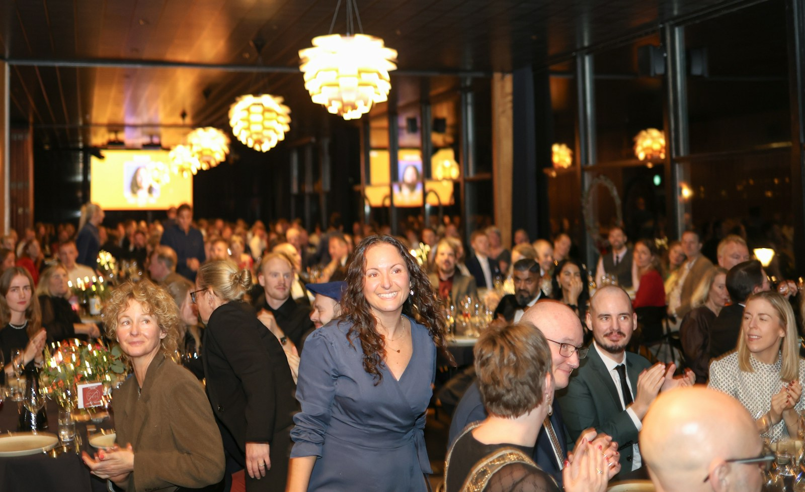

CORPORATE
Gala entertainment ideas
Nine ways to run the music at a gala or an award night, placed against the program, with notes on the celebrity emcee and the silent disco.

- A gala's entertainment is judged by how well it knows the program. Every idea here is placed against a cue: the doors, the remarks, dinner, the video, the auction, the walk-ups, the turn.
- The best-documented Denver gala we found layered four acts through one night. Most award nights book none. Both facts are opportunities for a committee.
- The after-party is where galas are spending now, and two of Denver's largest put it on headphones. A live act is the other way to fill that hour.
- Music that plays through the remarks or over the auctioneer costs a gala money. Silence on cue is part of what you're booking.
A gala committee books the venue and the honorees first, and the entertainment last, usually from a list that was written for a birthday. What a gala needs is different. The evening runs on a program, remarks, an auction, a paddle raise, a video, a walk to the stage, and the music has to know exactly where each of those is. The ideas below are placed against those cues, and the notes at the end cover the two ideas every gala list leads with.
The reception act at the doors #
Something is already playing when the first guest walks in, at a level the check-in table can hear itself over. That could be a jazz duo on upright bass and guitar, a solo pianist, or a Spanish guitarist for an evening that should feel like an occasion in its first ten minutes. The reception act sets the tone of the night, because it’s the first thing guests hear.
Dinner music the tables talk across #
A trio with brushes on the drums plays at a level the tables talk across, from the first course to the coffee. Tables that can talk are tables that bid, and a full band turned down never sits as low as a trio put together to play at that level. The galas and award nights page sets out the dinner set beside every other cue in the program.
Music for the walk-ups #
Each honoree gets a short piece from the moment the name is read to the moment they reach the podium, cut on arrival rather than faded over their first sentence. It’s the simplest idea on this list and the one that makes an award night feel produced. The band takes the names and the order in advance and watches the emcee.
The auction, handled in silence #
The band stays silent through the bidding unless the auctioneer wants something soft playing under it, and plays a short piece as each lot closes if the program calls for it. The auctioneer speaks on a microphone of their own, never the band’s.
The floor after the last award #
When the program closes and the floor opens, the night gets loud on cue. That can be a soul and R&B band on a ballroom floor, the yacht rock band for a crowd that wants to sing, or the DJ with a live musician playing over the set, all through the same sound system as dinner, without a changeover the guests can see.
Live band karaoke as the after-party #
This is the gala after-party that people describe to the board members who left early. A real band plays the hits on its own and hands the mic to the honorees, the sponsors and the table that bid the most, with the words on a screen and a host on the floor, and at a gala somebody always takes the mic. The live band karaoke page has the songbook, and the after-party page has the hour it fills.
The Colorado evening for the barn and the ranch gala #
For the fundraiser held on a ranch, in a barn or at a mountain venue, the Americana band plays the Colorado songbook through dinner and turns into a dance band once the drums come in.
Solo piano for the small dinner #
This is the idea for the donor dinner for thirty, the patrons’ evening or the awards dinner in a private dining floor. One musician at the piano plays standards through arrival and dinner, at a level the table can talk across, and goes silent for the remarks. It’s the smallest idea here and the one that makes a small evening feel hosted.
The celebrity emcee and the silent disco #
A celebrity emcee or a keynote name sells tables, and a professional auctioneer raises money. Neither is entertainment in the sense a floor is, and a night that’s all program and no music is a night people leave at the coffee. The best-documented Denver gala we found booked a broadcast emcee, a professional auctioneer and four musical acts, and raised more than the ones that booked a name and nothing else.
The silent disco is the format two of Denver’s largest galas chose for the after-party. It works, it keeps the noise complaint away, and it puts every guest in their own headphones at the one hour of the night they were finally free to talk to each other. A live act in the same hour does the opposite, and a venue’s decibel cap is a number a band can be built under.
| The cue | The idea | The booking |
|---|---|---|
| The doors | The reception act | Duo, solo piano or Spanish guitar |
| Dinner | Music the tables talk across | Trio, brushes on the drums |
| The awards | Music for the walk-ups | The same musicians, on cue |
| The auction | Silence, handled | Nobody plays over the auctioneer |
| The turn | The floor | Soul and R&B, yacht rock or the DJ |
| The after-party | Live band karaoke | Four to six musicians and a host |
| The barn or ranch | The Colorado evening | Americana trio or quartet |
| The small dinner | Solo piano | One |
Does music make people give more at a gala? #
We didn’t find a study that tested music at a charity auction, a gala or a fundraiser and measured what people gave. The closest is a 2004 study in a university gym, where 646 people worked out to music that was either uplifting or annoying and were then asked to help a charity. Almost everyone would sign a petition either way. For the bigger ask, handing out leaflets, more of the people who had heard the uplifting music offered to help. That study compared uplifting music with annoying music, though, and it counted offers to help rather than money given.
A 2019 study in a restaurant found that changing the mood of the background music made no overall difference to tips. So music that puts guests in a good mood may make them a little more willing to say yes, though that isn’t the same thing as higher bids. At a gala, the music can keep the evening moving and then stop for the appeal.
Sources
- North, A. C., Tarrant, M., and Hargreaves, D. J. (2004). The effects of music on helping behavior: a field study. Environment and Behavior. Read the source
- Beer, A., and Greitemeyer, T. (2019). The effects of background music on tipping behavior in a restaurant: a field study. Psychology of Music. Read the source